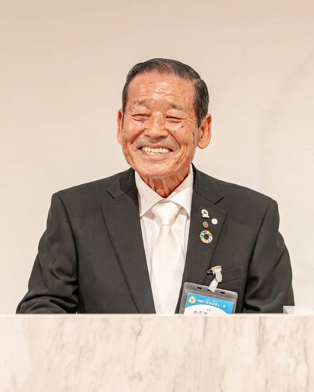

朝が変わると、
経営が変わる。
岡崎市葵倫理法人会 ― 学びと実践の経営者コミュニティ
ABOUT
この会について

世界各地では戦乱が絶えず、比較的平和な日本に暮らす私たちも決して安心できる状況ではありません。 政治の先行きが見えにくい中にあっても、岡崎市葵倫理法人会は皆様のご支援とご協力のおかげで 歩みを進めることができました。心より感謝申し上げます。
岡崎市葵倫理法人会は2025年6月に開設し、2026年2月、会員100社を達成して正式な単会となりました。 岡崎の地から幸せの輪がさらに広がっていくよう、伝統を継ぎつつ新しい風を取り入れ、 全力で取り組んでまいります。今後ともどうぞよろしくお願い申し上げます。
岡崎市葵倫理法人会は、全員が実践者です。幸せな人が増えるように、まずは自らが幸せになる。 お役を喜んで引き受け、実践していく。そういう会でありたいと思っています。
業種も会社の規模もさまざまです。気になった方は、一度、朝の会場をのぞいてみてください。
※ 倫理法人会は一般社団法人倫理研究所の法人会員組織です。特定の宗教・政治団体とは関係がありません。
学ぶ
毎週のモーニングセミナーで、さまざまな経営者・講師の体験から学びます。机上の理論ではなく実体験の話だからこそ、自社に持ち帰れる気づきがあります。
実践する
学んだことを「明日の朝から」試してみるのが倫理法人会の流儀です。挨拶、早起き、後始末。小さな実践の積み重ねが、社風と数字を変えていきます。
つながる
業種も規模も違う地域の経営者が、利害を越えて本音で話せる場です。朝食会や委員会活動を通じて、相談できる仲間ができます。
MORNING SEMINAR
モーニングセミナーの朝
「朝6時」と聞くと身構えるかもしれません。流れが分かれば大丈夫です。 ある木曜の朝を、時間に沿ってご紹介します。途中からの参加も、途中でのお帰りも自由です。
朝礼
会員による活力朝礼で一日を始めます。見学だけでも構いません。受付で「初めてです」とお声がけください。
経営者モーニングセミナー（60分）
その週の講師による講話。経営の転機、失敗からの学び、家族との関わり ― 毎週テーマが変わります。7時には終わるので、そのまま仕事に向かえます。
朝食会・シェア会（自由参加）
朝食をとりながら、講話の気づきを分かち合う時間です（7:15〜8:00）。経営の本音の話はここで出ます。初めての方の朝食代はいただきません。
※ 会場設営 5:00・リハーサル 5:15 から役員が動いています。早く着いてしまっても大丈夫です。
FIRST VISIT
はじめての方へ
初めてお越しになる方から、実際によくいただくご心配にお答えします。
ひとりで行っても平気ですか
ほとんどの方がお一人でいらっしゃいます。受付で「初めてです」とお伝えください。担当の会員が席までご案内し、朝食会でも隣につきます。
勧誘されませんか
入会のご案内はしますが、無理な勧誘はいたしません。何度でも見学していただけますし、合わないと感じられたら、それで終わりで構いません。
何を着ていけば
スーツの方が多いですが、決まりはありません。仕事着のままお越しになる方もいます。
費用はかかりますか
体験参加は無料です。朝食会（400円）も、初めての方はいただきません。
車で行けますか
会場に駐車場があります（無料）。正面33台・手前23台。早朝なので満車になることはまずありません。
経営者でなくても
後継者の方、幹部社員の方、これから創業する方も歓迎です。入会は法人単位なので、社員の方も一緒に学べます。
SCHEDULE
講話スケジュール
通常のモーニングセミナーは毎週木曜 6:00〜7:00、会場はイズモホール岡崎貴賓館です。 時刻・会場が書かれている回は特別開催です。
EVENTS
会員以外の方も参加できる行事
毎週のセミナーのほかに、年に数回、どなたでもご参加いただける行事を開いています。
REPORTS
活動報告
VISIT & JOIN
体験参加のご案内
モーニングセミナーは、どなたでも無料で体験できます。予約は要りません。 木曜の朝、会場にお越しいただければ大丈夫です。 事前に公式LINEでご一報いただければ、駐車場や当日の流れをご案内します。
公式LINEに登録（任意）
友だち追加して「体験参加希望」とメッセージをお送りください。日程・駐車場・当日の流れをご案内します。連絡なしで直接お越しいただいても構いません。
木曜の朝、会場へ
受付は5:30から。朝礼から見ても、6時の講話からでも構いません。受付で「初めてです」とお声がけください。
セミナーと朝食会を体験
体験は何度でも歓迎です。雰囲気が合うか、じっくりお確かめください。
ご入会（任意）
月会費 10,000円（1口・1社）。月刊誌『職場の教養』のご購読、全国の倫理法人会のセミナー参加、経営相談（倫理指導）をご利用いただけます。
ご連絡は公式LINEが早いです

毎週の講師案内、行事のお知らせ、体験参加のお申し込みまで。AIが24時間、会についてのご質問にお答えします。
友だち追加するお電話でも承ります
FAQ
よくある質問
宗教や政治と関係がありますか？
毎週必ず出席しないといけませんか？
体験参加に費用はかかりますか？
会費のほかにお金はかかりますか？
途中で退会できますか？
岡崎市外の会社でも入れますか？
ほかの倫理法人会との違いは？
ACCESS
会場・お問い合わせ
- 会場
- イズモホール岡崎貴賓館
- 住所
- 〒444-0802 愛知県岡崎市美合町小豆坂91
- 開催
- 毎週木曜 6:00〜7:00
（朝礼 5:30〜／朝食・シェア会 7:00〜8:00） - 駐車場
- 無料。正面33台・手前23台
※ 建物裏の通路はご遺族控室に面しています。お静かにお通りください。 - 役員
- お問い合わせ
- 公式LINEのチャットからもお気軽にどうぞ。